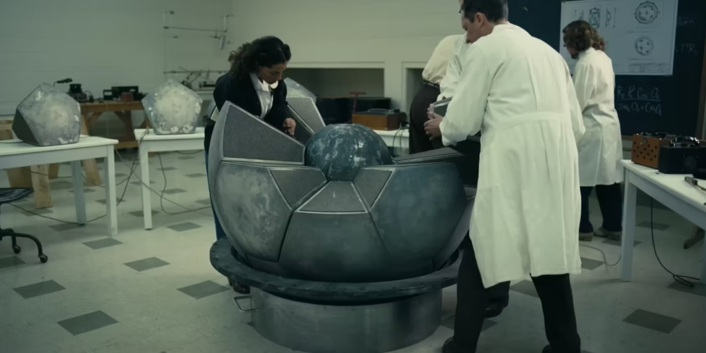

Desde criança, sempre gostei de aprender coisas novas. Sempre fui
muito curioso com todo tipo de coisa que se possa imaginar, e também
sempre tive facilidade em aprender sobre novos assuntos, o que acho
que vem muito do perfil acadêmico que citei na aba
Sobre Mim.
Por isso,
acredito que, na Include, além de poder ajudar com aquilo que já sei,
irei expandir meu leque de habilidades para ajudar a equipe, enquanto
me desenvolvo como profissional a cada dia. Pretendo aprender muito
mais sobre programação, ter mais contato com clientes, projetar e
realizar soluções para pessoas e negócios e tudo mais - resumidamente,
ter mais contanto com o mercado profissional.
Ah, nesse dia da imagem ao lado, estávamos eu, Einstein e
Oppenheimer revisando integrais impróprias lá na ECT, antes da prova
de Deusdedit. Vale salientar que Albertinho ficou de P4 KKKKK mas
conseguiu passar. Aprendi demais com esses caba!
A grande verdade é que estou cansado das mesmas pessoas na minha vida.
Brincadeira!(Nem tanto)
Eu
tenho certeza que, entrando na Include, conhecerei novas pessoas que
muito provavelmente terão objetivos e interesses parecidos com os
meus, e então poderemos trocar experiência e evoluírmos juntos, tipo
mutualismo. Ou seja, entrar na Include seria ótimo no sentido de criar
laços poderosos.
Pelo que eu vi, a Include tem uma ideia de trabalho em equipe bem interessante, são bem conectados entre si e formam realmente uma alcateia. Eu gostei bastante dessa energia e com certeza eu faria parte desse grupo; acredito que já sou bem participativo em atividades em equipe mas sei que sempre dá pra melhorar mais, e essa é uma grande oportunidade para isso.
É que nem a bomba de Oppenheimer: se uma das partes não funcionar bem, o resultado não é tão satisfatório quanto deveria ser. Da mesma forma, todos os lobos têm que estar bem para que a alcateia esteja 100%. Ô filosofada da bixiga ein
Eu acredito que muito do que sei hoje sobre programação veio dos
desafios que enfrentei nos
projetos que fiz parte: fazer
o jogo ARCCOS no meu início na programação foi essencial pra entender
JavaScript melhor e somente nos projetos do App SisTEA e do App WeAce
obtive certa experiência com React Native, Expo, Git, GitHub,
Docker...
Sabendo que aprendo bem mais colocando a mão na massa, entrar na
Include e participar de novos projetos com certeza vai ser bastante
enriquecedor pra mim; na verdade, só de estar fazendo esse blog, já
estou relembrando melhor algumas coisas de HTML e CSS, e até que ficou
legalzinho, né?
Acredito que ter participado desses projetos
também me deu uma bagagem para poder trabalhar bem na Include, já que
tive contato com clientes e desenvolvi certa experiência com trabalhar
em grupo para desenvolver programas.
Bom, esses foram
alguns dos motivos que vieram à mente. Espero estar UIVANDO por
aí muito em breve. Valeu!